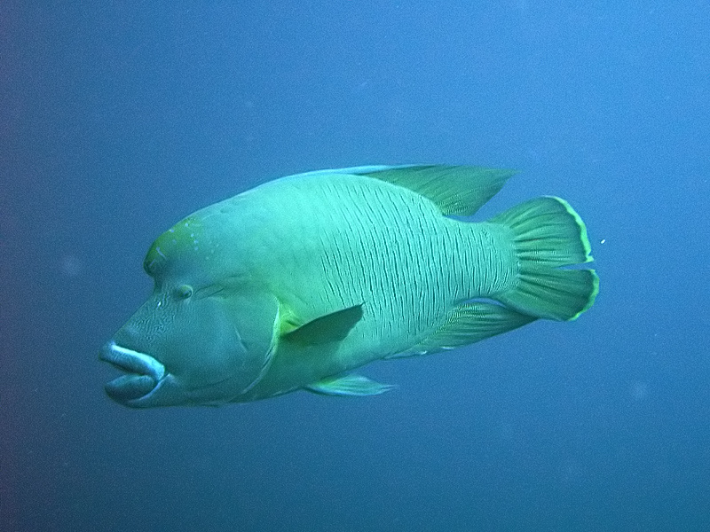
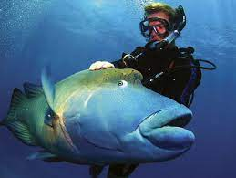

Cheilinus undulatus (лат., возможное русское название — рыба-наполеон[1][2]) — вид морских лучепёрых рыб из семейства губановых (Labridae). Населяют коралловые рифы Красного моря, тропических районов Индийского и Тихого океанов: от Южной и Восточной Африки до архипелага Туамоту, на север — до островов Рюкю. Приурочены к глубинам 1—100 м.
Научная классификация Домен: Эукариоты Царство: Животные Тип: Хордовые Класс: Лучепёрые рыбы Отряд: Губанообразные Семейство: Губановые Род: Хейлины Вид: Cheilinus undulatus
(Переходите на Рыбы 9
 